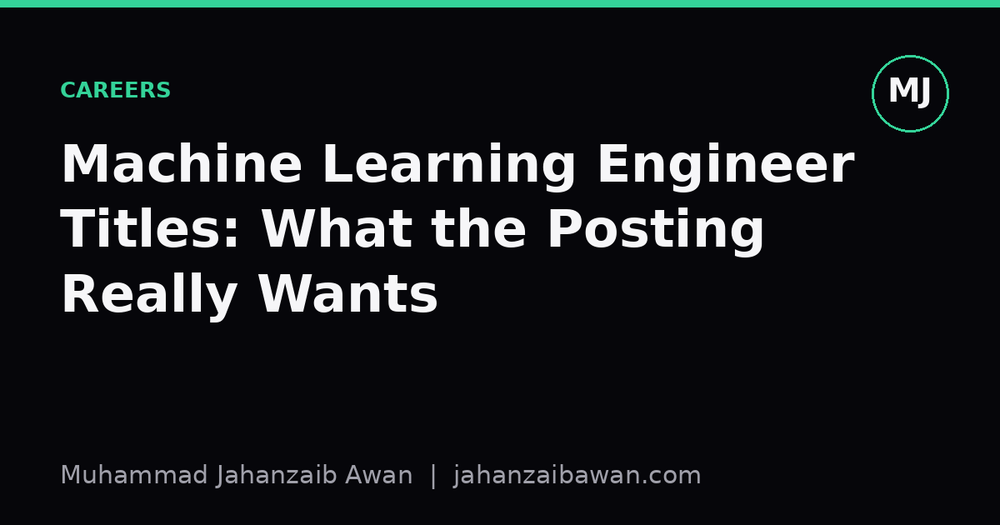

Machine Learning Engineer Titles: What the Posting Really Wants
The same job title can mean three very different jobs. Here is how to read a posting properly before you spend a week preparing for the wrong interview.

The title tells you almost nothing
I have read enough job postings now to notice a pattern that wastes everyone's time: the title at the top rarely matches the job described underneath. Three postings can all say 'Machine Learning Engineer' and describe three unrelated jobs. One wants someone who builds and tunes models. Another wants someone who maintains pipelines that move data from a warehouse into a feature store. A third wants someone who writes Terraform and keeps GPUs alive overnight. All three will ask for 'experience with PyTorch' somewhere in the bullet points, which tells you precisely nothing about which job it actually is.
This matters because preparation time is finite. If you spend two weeks revising gradient boosting internals and transformer architectures for a role that turns out to be eighty percent Kubernetes and data pipeline debugging, you have prepared for the wrong interview. The fix is not to memorise more trivia. It is to read the posting the way you would read a dataset before modelling it: look past the label and inspect what is actually inside.
Read the verbs, not the nouns
Nouns in a posting are aspirational. Verbs are descriptive. A posting that says 'you will own our recommendation models' is a noun-heavy sentence that sounds exciting but tells you little. Look instead at the verbs scattered through the responsibilities section: deploy, monitor, migrate, orchestrate, experiment, validate, label, annotate, retrain. The verb mix is the real job description.
Here is a concrete way to triage. Count how many bullet points use infrastructure verbs like deploy, scale, provision, or monitor, versus modelling verbs like design, experiment, evaluate, or tune. If a posting has eight bullets and six of them are infrastructure verbs, you are looking at a platform or MLOps role wearing an ML Engineer badge. If six of eight are modelling verbs, with mentions of offline evaluation, A/B testing, or held-out validation, that is closer to applied research or a genuine modelling role. Postings that genuinely split the work fifty-fifty do exist, but they are the minority, and the posting usually says so explicitly because the hiring manager knows it is unusual.
A second tell is the tooling list. 'Experience with Airflow, dbt, and Snowflake' next to 'experience with PyTorch' is not a coincidence; it means the day job is pipeline work with occasional model training bolted on. 'Experience with experiment tracking, hyperparameter search, and offline evaluation metrics' points the other way. Neither is better or worse as a job, but they require different preparation and, frankly, different temperaments. Pipeline-heavy roles reward people who like reliability and monitoring. Modelling-heavy roles reward people who like iterating on evaluation and reading error analysis.
A worked example: decoding two near-identical postings
Imagine two postings, both titled 'Machine Learning Engineer', both at similar-sized companies, both listing Python and PyTorch as requirements. Posting A's responsibilities read: 'build and maintain the training pipeline, manage the feature store, ensure model serving latency stays under 50 milliseconds, set up monitoring for data drift, collaborate with data engineering on schema changes.' Posting B's responsibilities read: 'design model architectures for a ranking problem, run offline evaluation against a held-out test set, analyse failure cases, run controlled online experiments, iterate on feature engineering with the research team.'
Posting A is, in substance, an MLOps or ML infrastructure role. The phrase 'serving latency stays under 50 milliseconds' is the giveaway: that is a systems constraint, not a modelling one. You would prepare for this by brushing up on deployment patterns, caching, monitoring for distribution shift in production, and how feature stores keep training and serving data consistent. Knowing the mathematical difference between L1 and L2 regularisation will not come up much.
Posting B is a modelling role with a research flavour. The phrases 'offline evaluation against a held-out test set' and 'controlled online experiments' tell you the interview will probe how you think about leakage, how you choose evaluation metrics that match the business objective, and how you reason about the gap between offline gains and online results. Here you would prepare by practising how to design a sound train and test split for the specific data structure involved, how to justify a metric choice, and how to explain a result that looked good offline but failed to replicate in an A/B test. That last scenario, in my experience, comes up more often in interviews than people expect, because it is the single clearest signal of whether a candidate actually understands evaluation or has just memorised algorithms.
Notice that both postings used the word PyTorch. That word carries almost no information on its own. What carries information is the sentence structure around the responsibilities: constraints versus experiments, uptime versus accuracy, pipelines versus hypotheses.
What to actually do with this before you apply
Before an interview, write a one-line summary of the role in your own words based on the verb and tooling pattern, not the title. If you cannot write that sentence confidently, that is itself useful information: it means the posting is vague, which is often a sign the hiring manager has not fully scoped the role yet, and you should ask about this directly rather than guess.
In the interview or in a follow-up email, it is entirely reasonable to ask what percentage of a typical week is spent on model development versus infrastructure and maintenance. Good hiring managers will have a real answer because they have thought about it. A vague answer is itself a data point, and not always a bad one; it can mean the role is genuinely new and flexible, but it does mean you should push for specifics on what success looks like after six months.
The broader point is one I keep coming back to in my own work: labels are a compression of information, and compression loses detail. A job title is a label applied by a hiring manager, a recruiter, or sometimes an HR template, none of whom necessarily agree on what the words mean. Treat the title as a hypothesis and the responsibilities section as the evidence. Read the evidence before you commit your preparation time, and you will walk into far fewer interviews that turn out to be testing something you never expected.